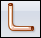

Create a tube
-
Choose Home tab→Tubing group→Tube

. -
On the Tube command bar, click the Tube Options button.
Note:If you select the Show this Dialog when the Command Begins option on the Tube Options dialog box, the dialog box automatically appears each time you click the Tube button.
-
In the File Name box of the Tube Options dialog box, type the name for the tube part.
-
On the Tube Options dialog box, define the other options for the tube part, then click OK.
Note:If you click OK on the Tube Options dialog box with a material that has no density assigned, a warning dialog box indicates that the tube file has no density, which causes the physical property calculations for the assembly to be inaccurate. To correct the problem, you can select a material with a defined density or you can leave the material without a defined density.
-
Click the tube path.
-
On the Tube command bar, click the Accept button
 .
. -
If you want to apply end treatments to the ends of the tube, click the Extent Step button on the command bar.
Note:You can enter an extent value in the End 1 box and End 2 box on the command bar to specify an extent for the tube ends. You can click the End Treatment Options button on the command bar to display the End Treatment Options dialog box, which you can use to specify an end treatment type for each tube end.
-
On the Tube command bar, click the Finish button.
Note:For Solid Edge data management users who selected the option Automatically name files via Document Number and Revision, the system displays a dialog box where you can assign common properties, such as document number and revision number, as explained in Create documents with unique properties.